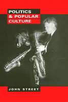

The cohabitation of politics and pop culture create a reconception of their influence on our judgments and expectations
The cohabitation of politics and pop culture create a reconception of their influence on our judgments and expectations


 The cohabitation of politics and pop culture create a reconception of their influence on our judgments and expectations
The cohabitation of politics and pop culture create a reconception of their influence on our judgments and expectations

|  |
Politics and Popular CultureJohn Streetpaper EAN: 978-1-56639-603-5 (ISBN: 1-56639-603-4) |
"John Street's Politics and Popular Culture is an engagingly written and interesting book. Street augments our understanding of the complex connections linking commercial culture to political power through careful exposition, clear examples, and a wonderfully knowing survey of contemporary writings on the subject."
—George Lipsitz, University of California, San Diego
In an age where film stars become presidents and politicians appear in television sitcoms, politics and popular culture have become inextricably linked. In order to understand this evolving relationship, author John Street argues that we must understand that each is a form of the other. Popular culture involves the organizing of our pleasure, and therefore our values, identities, and interests. At the same time, our pleasure depends on a series of political decisions and processes which in turn shape that culture.
Did East German rock musicians contribute to bringing down the Berlin wall? How does popular culture create feelings of compassion, empathy, or affinity? Street reflects on the use of popular culture to raise money and awareness via the concert for a cause, such as Live Aid, Farm Aid, and Comic Relief. What role does censorship play in our appreciation and acceptance of popular culture, as well as in the development of an ideology?
Ferreting out the debate between those who see the political nature of popular culture as a form of manipulation and those who see it as populist self-expression, Street argues that such an approach limits our perspective. This book attempts to expand our understanding of the ways the production and consumption of popular culture are organized, and, concurrently, how political judgments are inherent in engendering and enjoying pop culture.
Excerpt available at www.temple.edu/tempress
Acknowledgments
Part I: The Political and the Popular
1. Passion, Populism, Politics
2. Popular Culture Politics
3. Politics as Popular Culture
Part II: Governing Global Culture
4. All Around the World: The Global Politics of Popular Culture
5. Ruling the Waves: The State and Popular Culture
6. The Local Politics of Popular Culture
Part III: Political Theory/Cultural Theory
7. Cultural Theories of Politics
8. Political Theories of Culture
9. The politics of Judgment: From Condemnation to Commendation
10. Political Pleasures
Bibliography
Index
John Street is Senior Lecturer in Politics at the University of East Anglia.
Sociology
Political Science and Public Policy
© 2015 Temple University. All Rights Reserved. This page: http://www.temple.edu/tempress/titles/1406_reg.html.